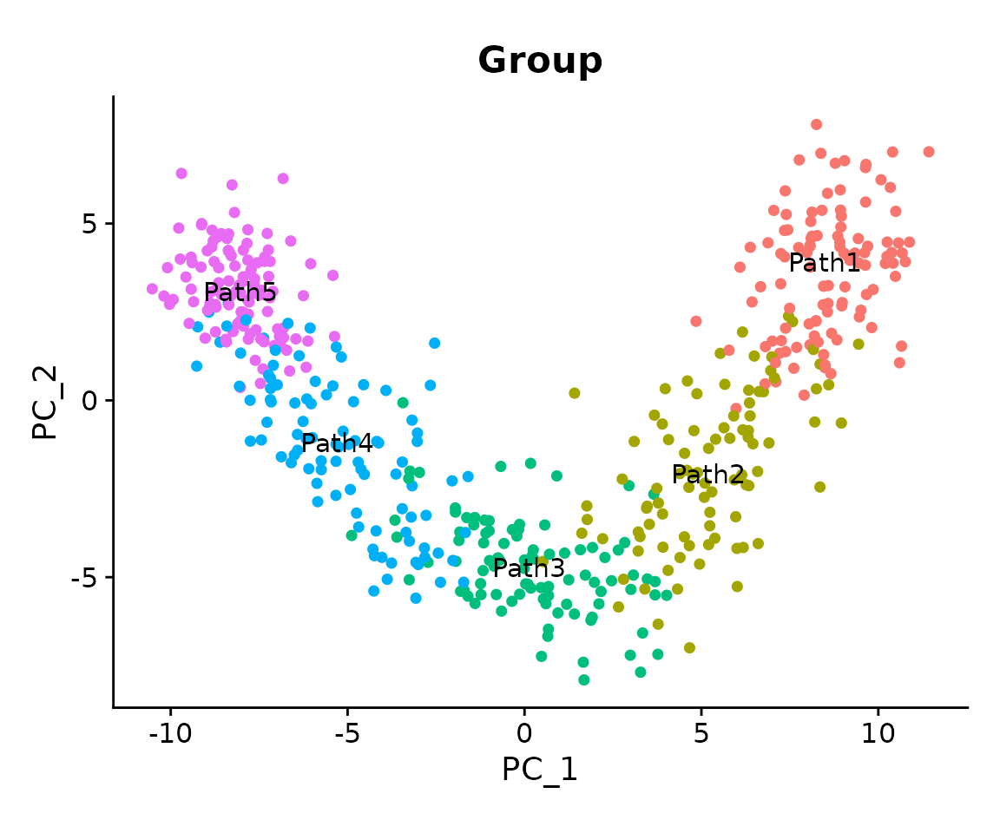
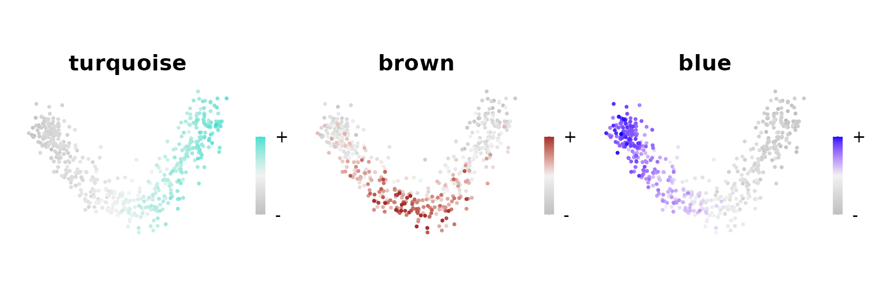
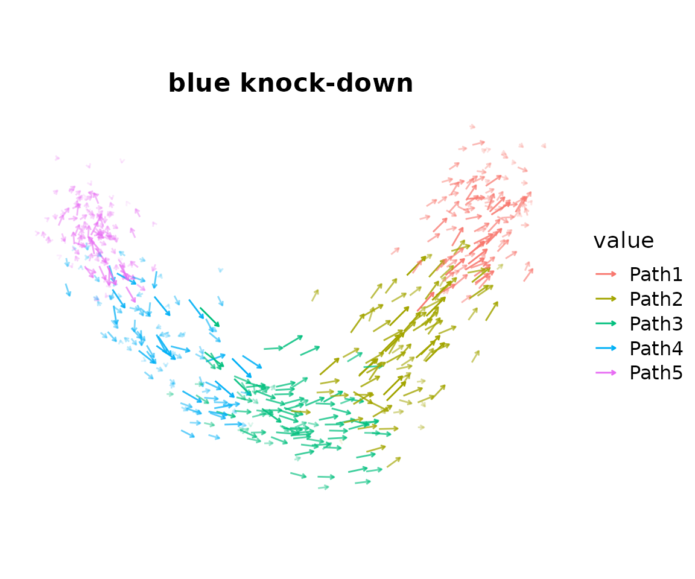

Quick start
quickstart.RmdCompiled: 2026-05-20
Source: vignettes/quickstart.Rmd
Introduction
compact (co-expression
module perturbation
analysis for cellular
transcriptomes) is an R package for in-silico gene
perturbation analysis in single-cell RNA-seq data. Given a gene
co-expression module, compact inhibits or activates the module’s hub
genes, propagates the signal via the gene co-expression network, and
computes cell-cell transition probabilities allowing you to ask: if
this module were knocked down, knocked out, or knocked in, which cell
states would cells move toward?
This quickstart vignette covers a minimal compact workflow where we perform a knock-down of one module and visualize the result as a vector field plot. We describe several of the key parameters, but for algorithmic depth, multiple modules, and downstream Markov-chain analyses, see the Basics Simulation vignette.
Prerequisite: The dataset used here already has co-expression modules computed with
hdWGCNA. If you need to run hdWGCNA on your own data first, start with the hdWGCNA tutorial. Optionally you can view the code below to see how the dataset was generated and processed.
Dataset generation: simulation and preprocessing steps (click to expand)
The dataset was generated from scratch using splatter to simulate a linear single-cell trajectory, then processed through Seurat and hdWGCNA. These steps are provided here for full reproducibility; they do not need to be re-run if you are loading the pre-processed object below.
Simulate a linear trajectory scRNA-seq dataset with splatter
library(Seurat)
library(tidyverse)
library(cowplot)
library(patchwork)
library(hdWGCNA)
library(compact)
theme_set(theme_cowplot())
set.seed(12345)
library(splatter)
library(scater)
params <- newSplatParams()
params <- setParam(params, "nGenes", 1500) # 1,500 genes
params <- setParam(params, "batchCells", 500) # 500 cells
params <- setParam(params, "lib.loc", 8)
params <- setParam(params, "path.nonlinearProb", 0.1)
sim_path <- splatSimulatePaths(
params,
group.prob = c(0.2, 0.2, 0.2, 0.2, 0.2), # 5 equally-sized groups
de.prob = 0.75,
de.facLoc = 0.2,
path.from = c(0, 1, 2, 3, 4), # linear chain: 1 → 2 → 3 → 4 → 5
seed = 12345,
verbose = FALSE
)
# remove genes with no zero counts (fully non-sparse genes confound ZINB modeling)
X <- counts(sim_path)
exclude_genes <- names(which(rowMins(X) > 0))
X <- X[setdiff(rownames(X), exclude_genes), ]
seurat_obj <- CreateSeuratObject(
counts = X,
meta.data = as.data.frame(colData(sim_path))
)Process the data with Seurat
seurat_obj <- NormalizeData(seurat_obj)
seurat_obj <- FindVariableFeatures(seurat_obj)
seurat_obj <- ScaleData(seurat_obj)
seurat_obj <- RunPCA(seurat_obj)
seurat_obj <- FindNeighbors(seurat_obj, reduction = 'pca', annoy.metric = 'cosine')
seurat_obj <- RunUMAP(seurat_obj, dims = 1:10)Co-expression network analysis with hdWGCNA
# set up hdWGCNA using all genes
seurat_obj <- SetupForWGCNA(
seurat_obj,
features = rownames(seurat_obj),
wgcna_name = "linear"
)
# construct metacells within each group for robust co-expression estimation
seurat_obj <- MetacellsByGroups(
seurat_obj = seurat_obj,
group.by = c("Group"),
reduction = 'pca',
k = 10,
max_shared = 5,
ident.group = 'Group',
target_metacells = 100,
min_cells = 5
)
seurat_obj <- NormalizeMetacells(seurat_obj)
# fit soft-power threshold and construct the co-expression network
seurat_obj <- SetDatExpr(seurat_obj)
seurat_obj <- TestSoftPowers(seurat_obj)
seurat_obj <- ConstructNetwork(
seurat_obj,
soft_power = 4,
tom_name = 'sim_linear',
overwrite_tom = TRUE
)
# compute module eigengenes and hub gene connectivity scores
seurat_obj <- ModuleEigengenes(seurat_obj)
seurat_obj <- ModuleConnectivity(seurat_obj)
saveRDS(seurat_obj, file = 'data/simulation_linear.rds')Load Libraries and Data
library(Seurat)
library(tidyverse)
library(cowplot)
library(patchwork)
library(hdWGCNA)
library(compact)
theme_set(theme_cowplot())
set.seed(12345)Load the simulated linear-trajectory dataset. This object has been processed through Seurat (normalization, PCA, UMAP) and hdWGCNA (co-expression network, module identification). The co-expression network (TOM) is stored as a separate file; update the path below if your working directory differs.
# TODO: update this block once this Seurat object is included in the package
seurat_obj <- readRDS('/home/groups/singlecell/smorabito/analysis/COMPACT/data/simulation_linear.rds')
# Update the TOM file path to match your local directory
net <- GetNetworkData(seurat_obj)
net$TOMFiles <- '/home/groups/singlecell/smorabito/analysis/COMPACT/TOM/sim_linear_TOM.rda'
seurat_obj <- SetNetworkData(seurat_obj, net)To better understand the dataset, we first visualize the different cell clusters on the PCA embedding. In principle, we used splatter to generate five clusters ordered along a single linear “differentiation” trajectory.
DimPlot(
seurat_obj,
reduction = 'pca',
group.by = 'Group',
label = TRUE,
pt.size = 1.5
) + NoLegend() + coord_equal() 
To see which region of the embedding each co-expression module is active in, we plot the module eigengenes (MEs, the summary expression level of each module) in the same embedding:
plot_list <- ModuleFeaturePlot(
seurat_obj,
reduction = 'pca',
features = 'MEs',
order = TRUE
)
#> [1] "turquoise"
#> [1] "brown"
#> [1] "blue"
wrap_plots(plot_list, ncol = 3)
Here we see two modules which represent the extreme ends of the linear trajectory, with the turquoise module expressed in the “Path1” group, the blue module expressed in the “Path5” group, and the brown module expressed in the middle of the trajectory.
Build the cell-cell neighborhood graph
compact requires a cell-cell neighborhood graph to compute transition
probabilities: critically, transition probabilities are only evaluated
between neighboring cells. FindNeighbors only needs to be
called once, and all subsequent ModulePerturbation calls
reuse the same graph.
seurat_obj <- FindNeighbors(
seurat_obj,
reduction = 'pca',
dims = 1:10,
k.param = 20,
annoy.metric = 'cosine'
)FindNeighbors stores two graphs in the Seurat object:
RNA_nn (KNN) and RNA_snn (shared nearest
neighbors). We use the SNN graph (RNA_snn) for
ModulePerturbation in the next section.
Tip: If you ran
FindNeighborsduring standard Seurat preprocessing, you can skip this step and pass the existing graph directly toModulePerturbation. Check which graphs are available withnames(seurat_obj@graphs).
Run the Perturbation
ModulePerturbation is the core function of compact.
Internally it:
-
ApplyPerturbationmodifies expression of the module’s top hub genes in the direction specified byperturb_dir -
ApplyPropagationdiffuses that signal through the gene co-expression network -
PerturbationTransitionscomputes cell-cell transition probabilities on the cell-cell neighborhood graph
Here we knock down the blue module using
perturb_dir = -1. The result is stored as a new assay and a
new transition probability graph inside the Seurat object.
seurat_obj <- ModulePerturbation(
seurat_obj,
mod = 'blue',
perturb_dir = -1,
perturbation_name = 'blue_down',
graph = 'RNA_snn',
n_hubs = 10,
delta_scale = 0.2,
n_iters = 3
)
#> [1] "Applying primary in-silico perturbation to hub genes..."
#> | | | 0% | |===== | 10% | |========== | 20% | |=============== | 30% | |==================== | 40% | |========================= | 50% | |============================== | 60% | |=================================== | 70% | |======================================== | 80% | |============================================= | 90% | |==================================================| 100%
#> [1] "Applying log-space signal propagation throughout co-expression network..."
#> [1] "Computing cell-cell transition probabilities based on the perturbation..."Expected runtime: 1–2 minutes on a laptop with a 500-cell dataset.
Key parameters:
| Parameter | Value | What it controls |
|---|---|---|
perturb_dir |
-1 |
Direction: negative = knock-down, positive = knock-in,
0 = knock-out |
n_hubs |
10 |
Number of hub genes to perturb directly; signal diffuses from these to the rest |
delta_scale |
0.2 |
Propagation dampening; lower values reduce risk of signal saturation |
n_iters |
3 |
Propagation steps through the network |
Troubleshooting graph name mismatch: If you see an error like “Graph ‘RNA_snn’ not found”, the graph name in your object may differ. Check with
names(seurat_obj@graphs)and update thegraph=argument to match.
Visualize the Vector Field
PlotTransitionVectors projects the cell-cell transition
probabilities onto the 2D embedding as a vector field analogous to an
RNA velocity plot. Here we plot one arrow per cell, showing the local
direction of transitions induced by the in-silico knockdown of the blue
module.
PlotTransitionVectors(
seurat_obj,
perturbation_name = 'blue_down',
reduction = 'pca',
color.by = 'Group',
plot_mode = 'cells',
arrow_scale = 1.5,
arrow_size = 0.5
) + ggtitle('blue knock-down') + coord_equal() 
What to look for: Previously, we saw the expression of the blue module on the left side of the trajectory. Therefore, we expect that an in-silico downregulation of this module would cause cells to transition from the left side towards the right side of the trajectory. Indeed, in this case we do that see many of the transition arrows follow this expected directionality.
Tip:
arrow_scalecontrols only the visual arrow length it does not affect the underlying transition probabilities. Adjust it freely until the arrows are legible. If arrows appear too small, increase it; if they overlap, decrease it.
Next steps
This quickstart covers the absolute minimal compact workflow. We encourage you to explore the other vignettes to unlock the full capabilities of compact.
Basics Simulation (
simulation_tutorial.Rmd): full pipeline on a branching trajectory both perturbation directions, all modules, vector field coherence scoring, and all four Markov-chain analyses (PredictPerturbationTime,PredictAttractors,PredictFates,PredictCommitment).Basics Real Dataset (
basic_tutorial.Rmd): compact applied to a real Alzheimer’s disease microglia atlasAlertSystemScore,ComputeDistance, andFindShapKeyDriverfor interpretable driver gene prioritization.Advanced Use Cases (
TF_tutorial.Rmd):TFPerturbationfor transcription factor–based perturbations using a regulatory network, andCustomPerturbationfor arbitrary gene sets.
sessionInfo()
#> R version 4.5.3 (2026-03-11)
#> Platform: x86_64-conda-linux-gnu
#> Running under: CentOS Linux 7 (Core)
#>
#> Matrix products: default
#> BLAS/LAPACK: /home/groups/singlecell/smorabito/.conda/envs/compact_fresh/lib/libopenblasp-r0.3.32.so; LAPACK version 3.12.0
#>
#> locale:
#> [1] LC_CTYPE=en_US.UTF-8 LC_NUMERIC=C
#> [3] LC_TIME=en_US.UTF-8 LC_COLLATE=en_US.UTF-8
#> [5] LC_MONETARY=en_US.UTF-8 LC_MESSAGES=en_US.UTF-8
#> [7] LC_PAPER=en_US.UTF-8 LC_NAME=C
#> [9] LC_ADDRESS=C LC_TELEPHONE=C
#> [11] LC_MEASUREMENT=en_US.UTF-8 LC_IDENTIFICATION=C
#>
#> time zone: Europe/Madrid
#> tzcode source: system (glibc)
#>
#> attached base packages:
#> [1] stats4 stats graphics grDevices utils datasets methods
#> [8] base
#>
#> other attached packages:
#> [1] future_1.70.0 compact_0.1.0
#> [3] hdWGCNA_0.4.11 enrichR_3.4
#> [5] SummarizedExperiment_1.40.0 Biobase_2.70.0
#> [7] MatrixGenerics_1.22.0 matrixStats_1.5.0
#> [9] GenomicRanges_1.62.1 Seqinfo_1.0.0
#> [11] IRanges_2.44.0 S4Vectors_0.48.0
#> [13] BiocGenerics_0.56.0 generics_0.1.4
#> [15] GeneOverlap_1.46.0 UCell_2.14.0
#> [17] tidygraph_1.3.0 ggraph_2.2.2
#> [19] igraph_2.3.1 WGCNA_1.74
#> [21] fastcluster_1.3.0 dynamicTreeCut_1.63-1
#> [23] ggrepel_0.9.8 harmony_2.0.2
#> [25] Rcpp_1.1.1-1.1 patchwork_1.3.2
#> [27] cowplot_1.2.0 lubridate_1.9.5
#> [29] forcats_1.0.1 stringr_1.6.0
#> [31] dplyr_1.2.1 purrr_1.2.2
#> [33] readr_2.2.0 tidyr_1.3.2
#> [35] tibble_3.3.1 ggplot2_4.0.3
#> [37] tidyverse_2.0.0 Seurat_5.5.0
#> [39] SeuratObject_5.4.0 sp_2.2-1
#>
#> loaded via a namespace (and not attached):
#> [1] fs_2.1.0 spatstat.sparse_3.1-0
#> [3] bitops_1.0-9 httr_1.4.8
#> [5] RColorBrewer_1.1-3 doParallel_1.0.17
#> [7] tools_4.5.3 sctransform_0.4.3
#> [9] backports_1.5.1 R6_2.6.1
#> [11] lazyeval_0.2.3 uwot_0.2.4
#> [13] withr_3.0.2 gridExtra_2.3
#> [15] preprocessCore_1.72.0 progressr_0.19.0
#> [17] cli_3.6.6 textshaping_1.0.5
#> [19] spatstat.explore_3.8-0 fastDummies_1.7.6
#> [21] labeling_0.4.3 sass_0.4.10
#> [23] S7_0.2.2 spatstat.data_3.1-9
#> [25] proxy_0.4-29 ggridges_0.5.7
#> [27] pbapply_1.7-4 pkgdown_2.2.0
#> [29] systemfonts_1.3.2 foreign_0.8-91
#> [31] pscl_1.5.9 parallelly_1.47.0
#> [33] WriteXLS_6.8.0 VGAM_1.1-14
#> [35] rstudioapi_0.18.0 impute_1.84.0
#> [37] gtools_3.9.5 ica_1.0-3
#> [39] spatstat.random_3.4-5 car_3.1-5
#> [41] Matrix_1.7-5 abind_1.4-8
#> [43] lifecycle_1.0.5 yaml_2.3.12
#> [45] carData_3.0-6 gplots_3.3.0
#> [47] SparseArray_1.10.8 Rtsne_0.17
#> [49] grid_4.5.3 promises_1.5.0
#> [51] miniUI_0.1.2 lattice_0.22-9
#> [53] pillar_1.11.1 knitr_1.51
#> [55] rjson_0.2.23 xgboost_3.2.0.1
#> [57] future.apply_1.20.2 codetools_0.2-20
#> [59] glue_1.8.1 spatstat.univar_3.1-7
#> [61] data.table_1.18.2.1 vctrs_0.7.3
#> [63] png_0.1-9 spam_2.11-3
#> [65] gtable_0.3.6 cachem_1.1.0
#> [67] xfun_0.57 S4Arrays_1.10.1
#> [69] mime_0.13 survival_3.8-6
#> [71] SingleCellExperiment_1.32.0 iterators_1.0.14
#> [73] fitdistrplus_1.2-6 ROCR_1.0-12
#> [75] nlme_3.1-169 SHAPforxgboost_0.2.0
#> [77] RcppAnnoy_0.0.23 bslib_0.10.0
#> [79] irlba_2.3.7 KernSmooth_2.23-26
#> [81] otel_0.2.0 rpart_4.1.27
#> [83] colorspace_2.1-2 Hmisc_5.2-5
#> [85] nnet_7.3-20 tidyselect_1.2.1
#> [87] compiler_4.5.3 curl_7.1.0
#> [89] htmlTable_2.5.0 BiocNeighbors_2.4.0
#> [91] desc_1.4.3 DelayedArray_0.36.0
#> [93] plotly_4.12.0 checkmate_2.3.4
#> [95] scales_1.4.0 caTools_1.18.3
#> [97] lmtest_0.9-40 digest_0.6.39
#> [99] goftest_1.2-3 spatstat.utils_3.2-2
#> [101] rmarkdown_2.31 XVector_0.50.0
#> [103] htmltools_0.5.9 pkgconfig_2.0.3
#> [105] base64enc_0.1-6 fastmap_1.2.0
#> [107] rlang_1.2.0 htmlwidgets_1.6.4
#> [109] BBmisc_1.13.1 shiny_1.13.0
#> [111] farver_2.1.2 jquerylib_0.1.4
#> [113] zoo_1.8-15 jsonlite_2.0.0
#> [115] BiocParallel_1.44.0 magrittr_2.0.5
#> [117] Formula_1.2-5 dotCall64_1.2
#> [119] viridis_0.6.5 reticulate_1.46.0
#> [121] stringi_1.8.7 MASS_7.3-65
#> [123] plyr_1.8.9 parallel_4.5.3
#> [125] listenv_0.10.1 deldir_2.0-4
#> [127] graphlayouts_1.2.3 splines_4.5.3
#> [129] tensor_1.5.1 hms_1.1.4
#> [131] rdist_0.0.5 ggpubr_0.6.3
#> [133] spatstat.geom_3.7-3 ggsignif_0.6.4
#> [135] RcppHNSW_0.6.0 reshape2_1.4.5
#> [137] evaluate_1.0.5 tester_0.3.0
#> [139] tzdb_0.5.0 foreach_1.5.2
#> [141] tweenr_2.0.3 httpuv_1.6.17
#> [143] RANN_2.6.2 polyclip_1.10-7
#> [145] scattermore_1.2 ggforce_0.5.0
#> [147] broom_1.0.12 xtable_1.8-8
#> [149] RSpectra_0.16-2 rstatix_0.7.3
#> [151] later_1.4.8 viridisLite_0.4.3
#> [153] ragg_1.5.2 memoise_2.0.1
#> [155] cluster_2.1.8.2 timechange_0.4.0
#> [157] globals_0.19.1